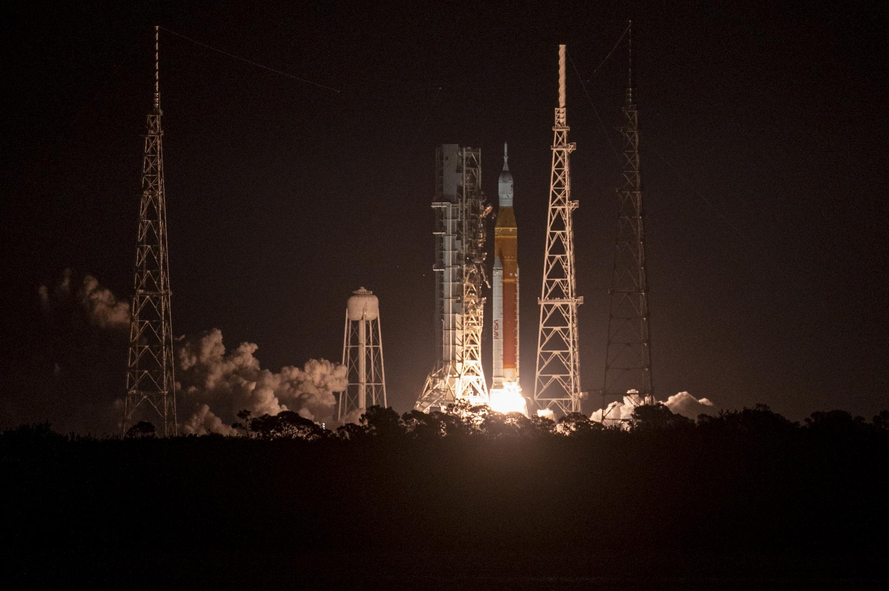
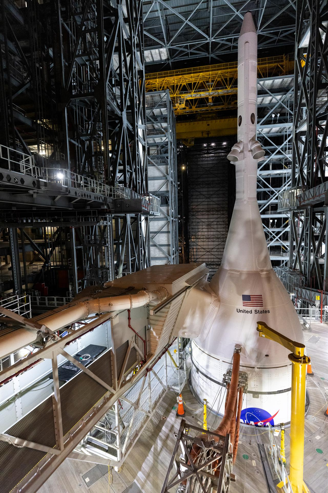
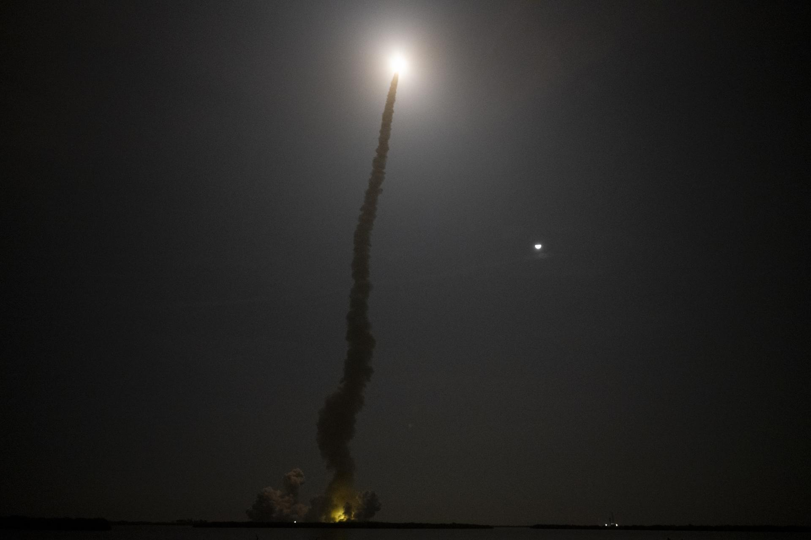
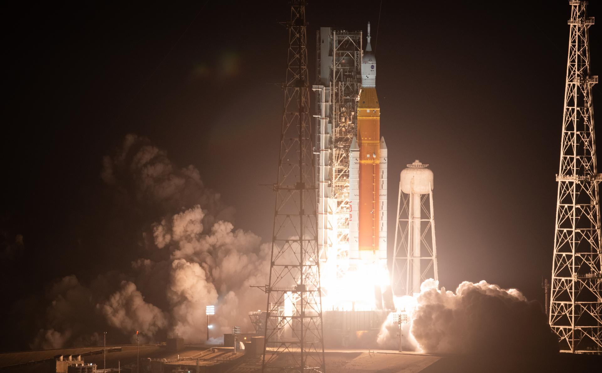
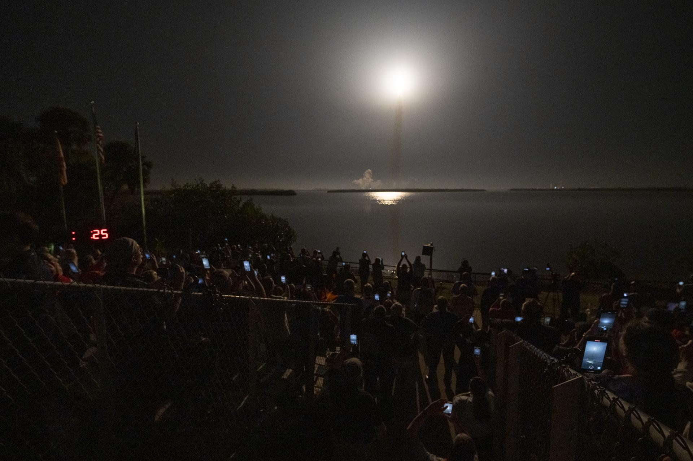

ARTEMIS I

Artemis I represents the first step of humanity's return to the Moon. This uncrewed mission tested the SLS rocket and Orion spacecraft systems in a dangerous journey to deep space.
Launched in November 2022, Artemis I carried a crew module beyond the Moon into a distant retrograde orbit. The mission validated every critical system before astronauts would ever set foot aboard. It was a triumph of engineering, proving that the most powerful rocket ever built could carry humanity's dreams into the cosmos.
The test flight lasted 26 days, covering over 1.4 million miles. Every sensor, every thruster, every heat shield was pushed to its limits. And they all passed. Artemis I was not just a test—it was a promise.
Key Systems Tested
SLS Rocket
The Space Launch System, the most powerful rocket in the world, achieved its maiden flight successfully.
Orion Spacecraft
The crew capsule was tested in real conditions, far beyond Earth's protective magnetic field.
ICPS Stage
The Interim Cryogenic Propulsion Stage pushed Orion toward the Moon and beyond.
Heat Shield
Orion's Thermal Protection System withstood temperatures of 5,000 degrees Fahrenheit during reentry.
Navigation
Advanced guidance systems navigated the spacecraft through space with precision.
Flight Duration
26 days in space, proving systems could sustain extended missions far from Earth.
Mission Gallery






Ready for the Next Step?
Artemis I proved the path forward. Soon, humans will walk on the Moon again. Will you join the journey?
Take the Test